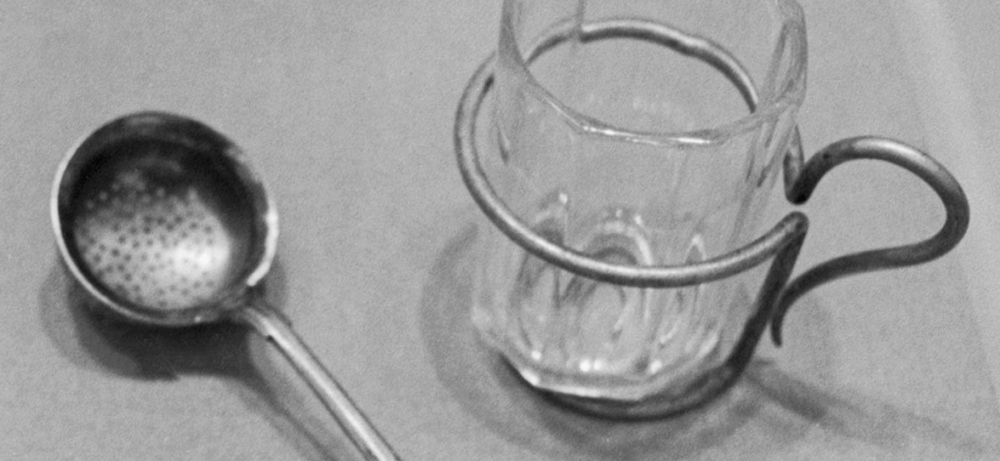

Добро пожаловать на сайт
|
дом
|
рецепт приготовления
|
источник
|
Вот как это приготовила моя бабушка

Полстакана горячего малинового чая
Дешевое теплое вино с юга
Немного коксовой соды
[Parody] 90s Style Website about Russian Kalimotxo Beverage. Based on Template by Pizza Squeeze (https://codepen.io/nikillpop/pen/VdJjJW) Music by Sp00n .exe (https://www.youtube.com/watch?v=O7PKpR6D4Aw)